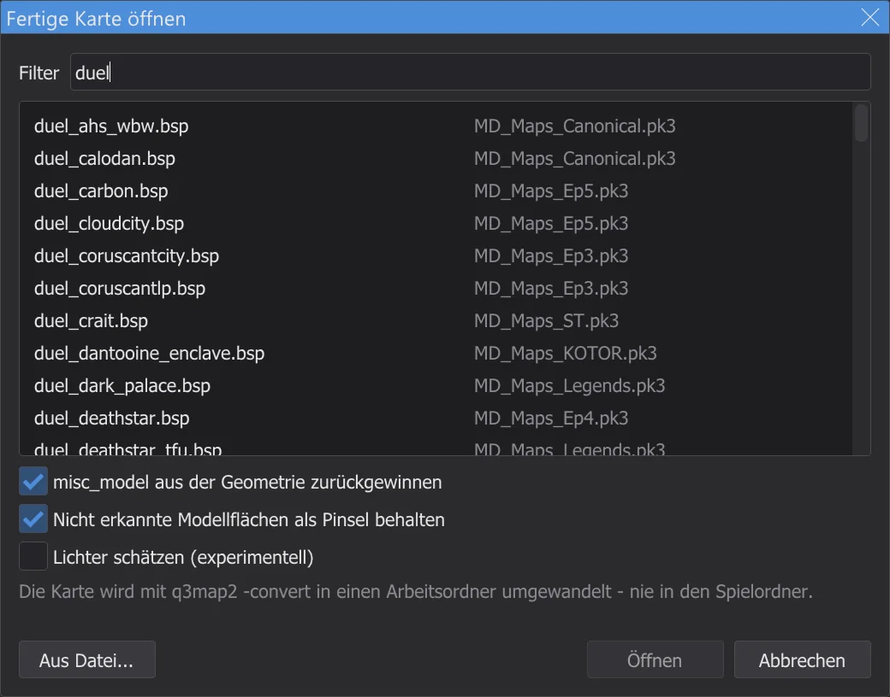
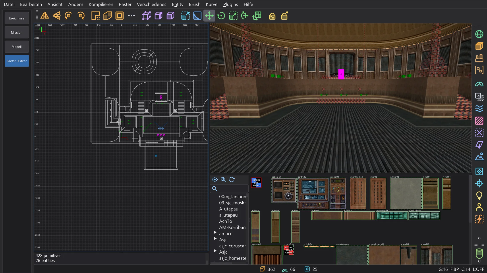
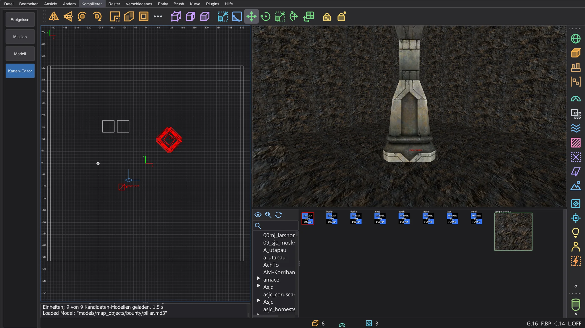
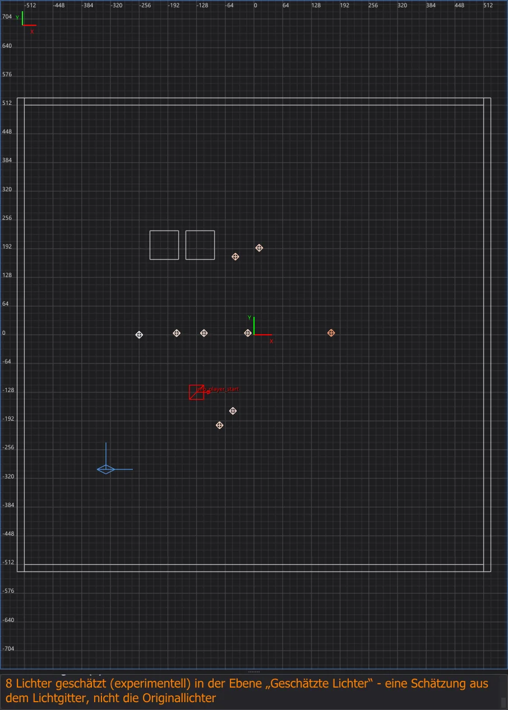
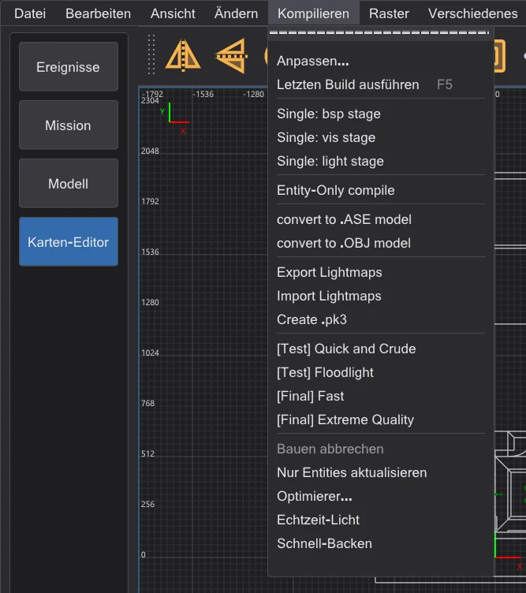

Karten-Editor: fertige Karten öffnen und ändern
Öffne mit Datei > .bsp öffnen eine fertige Karte des Spiels - direkt aus ihrer .pk3 -, ändere ihre Entities und schreibe sie mit Kompilieren > Nur Entities aktualisieren zurück: Geometrie und Originallicht bleiben Byte für Byte, wie sie sind.
Eine fertige Karte öffnen#

duel - jede Karte neben dem Archiv, aus dem das Spiel sie lädt; unter der Liste die Optionen für misc_model und Lichter.- 1
Datei > .bsp öffnen listet jede Karte (
maps/…/*.bsp) der Spielordner so, wie das Spiel sie sieht: je Name nur die Fassung, die das Spiel laden würde - eine Mod vorbase, eine spätere .pk3 vor einer früheren. Die rechte Spalte nennt die .pk3 oder den Ordner. Tippe einen Teil des Namens in Filter. - 2
Doppelklicke eine Karte oder wähle sie und klicke auf Öffnen. Aus Datei öffnet stattdessen eine .bsp von irgendwo auf der Platte.
- 3
Der Karten-Editor kopiert die .bsp in einen Arbeitsordner im Einstellungsordner (
karte_bsp\<Name>) - nie in den Spielordner - und wandelt sie mit q3map2-convertzurück in eine Karte, wie NetRadiant-Custom beim Importieren einer .bsp. Danach ist die Karte offen wie eine.map. Hat die offene Karte ungespeicherte Änderungen, fragt der Editor vorher.
mp/duel1 aus der .pk3 des Spiels geöffnet: 362 Brushes, 66 Patches und 26 Entities aus der .bsp; im Hintergrund wurden 14 misc_modelwiedergefunden, und 938 Dreiecke nicht gefundener Modelle wurden 779 dünne Brushes in der Ebene Nicht erkannte Modellflächen (siehe misc_model aus der Geometrie zurückgewinnen).

Eine fertige Karte ist nicht die ursprüngliche .map. Brushes mit ihren Texturen, Patches und Entities kommen zurück. Was q3map2 in die .bsp einbackt, nicht: die Modelle der misc_model-Entities, Decals und die Lichtentities - für Jedi Academy gebaute Karten enthalten sie meist nicht mehr, ihr Licht steckt nur noch in den Lightmaps und im Lichtgitter. Auf manchen Flächen kann die Texturausrichtung leicht abweichen. Mit LIGHT neu gebaut, bekommt so eine Karte neues Licht, berechnet ohne die ursprünglichen Lichter. Wer nur Entities ändern will - Startpunkte, NPCs, Gegenstände, Skripte, Schlüssel -, behält stattdessen das Originallicht. Drei eigene Funktionen holen mehr zurück: die Editor-Daten einer mit Editor-Daten behalten gebauten Karte (alles, genau), misc_model aus der Geometrie und geschätzte Lichter.
Was eine .bsp nicht mehr enthält#
q3map2 entfernt beim Bauen einige Entities, darum können sie aus der .bsp nicht zurückkommen - das ist kein Fehler der Umwandlung. Ein Beispiel ist eine Jedi-Academy-Karte eines Testers: von 388 Lichtern kamen 9 zurück, von 265 misc_model keines, alle 233 info_null sind da.
- Lichter ohne targetname: nur Lichter, die im Spiel schaltbar sind, bleiben in der .bsp; alle anderen streicht q3map2, nachdem ihr Licht in die Lightmaps gerechnet ist (q3map2
writebsp.cpp, SetLightStyles). Im Beispiel sind das die 9 Lichter mit targetname. ⟦Lichter schätzen (experimentell)⟧ setzt stattdessen geschätzte Lichter. misc_model: q3map2 backt das Modell in die Geometrie der Karte ein und entfernt die Entity (model.cpp, AddTriangleModels;bspfile_abstract.cpp, UnparseEntities - außer die Karte wurde mit-keepmodelsgebaut). Ebenso_decalund_skybox. ⟦misc_model aus der Geometrie zurückgewinnen⟧ findet die Modelle in der Geometrie wieder.func_group: seine Brushes wandern in worldspawn (map.cpp, MoveBrushesToWorld), die Gruppe selbst ist weg.- Ebenen, Schlüssel von Gruppen und die genaue Texturausrichtung: die .bsp kennt keine Ebenen; die Schlüssel einer
func_groupgehen mit der Gruppe; die Ausrichtung einer Brush-Fläche wird aus den Ecken ihrer Fläche neu gebildet (-convert) und kann leicht abweichen. - Flächen ohne Brush: die Dreiecke eines Modells, dessen Datei fehlt, und Flächen nicht fester Brushes stehen in der .bsp nur als Zeichenflächen. Sie kommen weder als Brush noch als Modell zurück; ⟦Nicht erkannte Modellflächen als Pinsel behalten⟧ behält sie als dünne Brushes.
- Alles andere bleibt, zum Beispiel
info_null(die Ziele von Spotlichtern), Trigger, Türen und ihre Schlüssel. Hint-, Areaportal- und Skip-Brushes kommen structural zurück, wie in der Quelle.
Editor-Daten behalten#
Bei eigenen Karten muss nichts verloren gehen. Schalte vor dem Bauen Kompilieren > Editor-Daten behalten ein (vorgegeben aus, nicht in NetRadiant-Custom):
- Jeder BSP-Schritt läuft mit
-keeplights: alle Lichter bleiben im Entity-Lump. Das Spiel gibt Lichter ohne targetname beim Kartenstart frei (OpenJKSP_light), im Spiel kosten sie also nichts; der Optimierer zählt ihre Bytes in der Prüfung Entity-Lump und seine Grenzen. - Nach dem Bau liegt
<Karte>.bhedneben der .bsp: die genaue Quellkarte mit einem Fingerabdruck der Geometrie dieser .bsp.misc_modelkommt nicht in die .bsp - das Spiel würde es als leere Entity anlegen -, sondern in diese Datei. - Datei > .bsp öffnen findet die Datei neben der .bsp - auch in den .pk3 des Spiels - und öffnet, wenn der Fingerabdruck passt, die Quellkarte statt eines Dekompilats:
misc_model,func_group, Texturausrichtung, Detail und Ebenen sind zurück. Gehört sie zu einem anderen Bau, sagt es die Konsole, und die .bsp wird wie üblich dekompiliert.
misc_model aus der Geometrie zurückgewinnen#
Ohne Editor-Daten sind die Modelle in der .bsp nur Dreiecke. Mit misc_model aus der Geometrie zurückgewinnen im Dialog Fertige Karte öffnen (vorgegeben an, nicht in NetRadiant-Custom) sucht der Editor sie nach dem Öffnen, im Hintergrund mit einem Fortschrittsfenster:
- 1
Die Kandidaten sind die Modelldateien des Spiels in den Ordnern der Shader der Karte. bhed_q3map2 lädt sie genau wie der Compiler (
-bhedmodels, derselbe Modell-Lader wie-bsp). - 2
Jedes Modell wird in den Dreiecken der .bsp gesucht - auch wenn q3map2 es in größere Flächen verschmolzen hat (
forcemeta). Nur genaue Treffer werden einmisc_modelmitorigin,angleoderanglesundmodelscale; die Konsole nennt den größten Eckenfehler. - 3
Die Modelle kommen als ein Rückgängig-Schritt. Ihre Dreiecke werden nicht verdoppelt: das Dekompilat hat für sie keine Brushes, darum geht Nur Entities aktualisieren weiterhin. Ändern sich Brushes oder Patches, bevor die Suche fertig ist (etwa mit Importieren), wird das Ergebnis verworfen - dann die .bsp noch einmal öffnen.

misc_model mit Winkel und Skalierung zurück.Bei jeditemple_garden (Testerkarte, Quelle bekannt) kamen alle 265 von 265 misc_model zurück, ohne ein falsches Modell; die größte Abweichung zur Quelle ist 0,002 Einheiten im Ort und 0,0002° im Winkel. Originalkarten des Spiels haben auch Modelle aus anderen Ordnern; was nicht gefunden wird, bleibt Dreiecke.
system/nodraw an den Seiten in der Ebene Nicht erkannte Modellflächen. Prüfe sie - blende die Ebene aus oder lösche, was du nicht brauchst; sie können Geometrie doppeln, die es in anderer Form gibt.Lichter schätzen (experimentell)#
Lichter schätzen (experimentell) im Dialog Fertige Karte öffnen (vorgegeben aus, nicht in NetRadiant-Custom) setzt Lichter dort, woher das Lichtgitter der .bsp sagt, dass Licht kommt: von jedem Gitterpunkt wird das gerichtete Licht zurückverfolgt, bis es auf Geometrie trifft, die Stellen, an denen sich viele Strahlen treffen, werden Lichter, ihre Stärke und Farbe kommen aus dem Gitter. Sie kommen in die Ebene Geschätzte Lichter und tragen den Schlüssel _bhed_geschaetzt 1 (q3map2 und das Spiel übergehen ihn). Lichter, die in der .bsp geblieben sind, werden nicht verdoppelt.

Das Originallicht behalten#

- 1
Ändere Entities: Schlüssel und Werte (auch von worldspawn), Punkt-Entities wie Startpunkte, NPC-Spawner und Gegenstände verschieben, hinzufügen oder löschen, Schlüssel von Brush-Entities ändern.
- 2
Kompilieren > Nur Entities aktualisieren speichert die Karte, nimmt eine frische Kopie der Original-.bsp und lässt q3map2
-onlyentsim Hintergrund laufen (Ausgabe in der Konsole, wie beim Bauen). Nur der Entity-Lump wird neu gebaut; der Editor setzt ihn in die Kopie des Originals ein, so bleibt jeder andere Lump - Geometrie, Lightmaps, Lichtgitter, Sichtbarkeit - Byte für Byte, wie er war. - 3
Die Konsole bestätigt es mit Entities aktualisiert und der Zahl der unveränderten Lumps. Das Ergebnis ist
<Name>.bspim Arbeitsordner; das unberührte Original liegt daneben als<Name>_original.bsp. - 4
Zum Spielen kopiere die neue .bsp in den Ordner
mapsdes Spiels, wie auf Karten-Editor: Karte bauen beschrieben - bei einer Karte aus einer .pk3 am besten unter neuem Namen, dann bleibt das Original in der .pk3, wie es ist (zum Beispielduel1_neu.bspinmaps\mp, gestartet mitdevmap mp/duel1_neu).
misc_model gehören zur Geometrie. Hat sich davon seit dem Öffnen etwas geändert, lässt Nur Entities aktualisieren q3map2 nicht laufen; der Kasten Nur Entities aktualisieren erklärt, dass die Karte mit BSP, VIS und LIGHT neu gebaut werden muss - mit neuem Licht. Rückgängig bringt die Geometrie zurück auf das Original, dann geht der Eintrag wieder.-keeplights, damit sie bleiben. Der eigene Eintrag Entity-Only compile von NetRadiant-Custom im selben Menü führt ebenfalls -onlyents aus, aber ohne die Prüfung und ohne das Einsetzen ins Original - bei Jedi-Outcast-Karten kann er Lichter verlieren und das Lichtgitter neu schreiben. Für eine mit .bsp öffnen geöffnete Karte nimm Nur Entities aktualisieren.